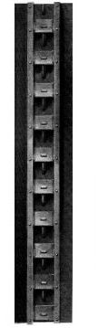
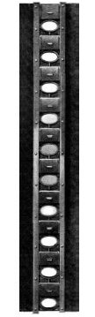

Steam: its Generation and Use
Table of Contents Previous Chapter
The following brief description of the Babcock & Wilcox boiler will clearly indicate the manner in which it fulfills the requirements of the perfect steam boiler already enumerated.
The Babcock & Wilcox boiler is built in two general classes, the longitudinal drum type and the cross drum type. Either of these designs may be constructed with vertical or inclined headers, and the headers in turn may be of wrought steel or cast iron dependent upon the working pressure for which the boiler is constructed. The headers may be of different lengths, that is, may connect different numbers of tubes, and it is by a change in the number of tubes in height per section and the number of sections in width that the size of the boiler is varied.
The longitudinal drum boiler is the generally accepted standard of Babcock & Wilcox construction. The cross drum boiler, though originally designed to meet certain conditions of headroom, has become popular for numerous classes of work where low headroom is not a requirement which must be met.
LONGITUDINAL DRUM CONSTRUCTION—The heating surface of this type of boiler is made up of a drum or drums, depending upon the width of the boiler extending longitudinally over the other pressure parts. To the drum or drums there are connected through cross boxes at either end the sections, which are made up of headers and tubes. At the lower end of the sections there is a mud drum extending entirely across the setting and connected to all sections. The connections between all parts are by short lengths of tubes expanded into bored seats.
The drums are of three sheets, of such thickness as to give the required factor of safety under the maximum pressure for which the boiler is constructed. The circular seams are ordinarily single lap riveted though these may be double lap riveted to meet certain requirements of pressure or of specifications. The longitudinal seams are properly proportioned butt and strap or lap riveted joints dependent upon the pressure for which the boilers are built. Where butt strap joints are used the straps are bent to the proper radius in an hydraulic press. The courses are built independently to template and are assembled by an hydraulic forcing press. All riveted holes are punched one-quarter inch smaller than the size of rivets as driven and are reamed to full size after the plates are assembled. All rivets are driven by hydraulic pressure and held until black.
The drumheads are hydraulic forged at a single heat, the manhole opening and stiffening ring being forged in position. Flat raised seats for water column and feed connections are formed in the forging.
All heads are provided with manholes, the edges of which are turned true. The manhole plates are of forged steel and turned to fit manhole opening. These plates are held in position by forged-steel guards and bolts.
The drum nozzles are of forged steel, faced, and fitted with taper thread stud bolts.
Cross boxes by means of which the sections are attached to the drums, are of forged steel, made from a single sheet.
Where two or more drums are used in one boiler they are connected by a cross pipe having a flanged outlet for the steam connection.
The sections are built of 4-inch hot finished seamless open-hearth steel tubes of No. 10 B. W. G. where the boilers are built for working pressures up to 210 pounds. Where the working pressure is to be above this and below 260 pounds, No. 9 B. W. G. tubes are supplied.
The tubes are expanded into headers of serpentine or sinuous form, which dispose the tubes in a staggered position when assembled as a complete boiler. These headers are of wrought steel or of cast iron, the latter being ordinarily supplied where the working pressure is not to exceed 160 pounds. The headers may be either vertical or inclined as shown in the various illustrations of assembled boilers.
Opposite each tube end in the headers there is placed a handhole of sufficient size to permit the cleaning, removal or renewal of a tube. These openings in the wrought steel vertical headers are elliptical in shape, machine faced, and milled to a true plane back from the edge a sufficient distance to make a seat. The openings are closed by inside fitting forged plates, shouldered to center in the opening, their flanged seats milled to a true plane. These plates are held in position by studs and forged-steel [Pg 51] binders and nuts. The joints between plates and headers are made with a thin gasket.
In the wrought-steel inclined headers the handhole openings are either circular or elliptical, the former being ordinarily supplied. The circular openings have a raised seat milled to a true plane. The openings are closed on the outside by forged-steel caps, milled and ground true, held in position by forged-steel safety clamps and secured by ball-headed bolts to assure correct alignment. With this style of fitting, joints are made tight, metal to metal, without packing of any kind.
Where elliptical handholes are furnished they are faced inside, closed by inside fitting forged-steel plates, held to their seats by studs and secured by forged-steel binders and nuts.
The joints between plates and header are made with a thin gasket.
The vertical cast-iron headers have elliptical handholes with raised seats milled to a true plane. These are closed on the outside by cast-iron caps milled true, held in position by forged-steel safety clamps, which close the openings from the inside and which are secured by ball-headed bolts to assure proper alignment. All joints are made tight, metal to metal, without packing of any kind.
The mud drum to which the sections are attached at the lower end of the rear headers, is a forged-steel box 7¼ inches square, and of such length as to be connected to all headers by means of wrought nipples expanded into counterbored seats. The mud drum is furnished with handholes for cleaning, these being closed from the inside by forged-steel plates with studs, and secured on a faced seat in the mud drum by forged-steel binders and nuts. The joints between the plates and the drum are made with thin gaskets. The mud drum is tapped for blow-off connection.
All connections between drums and sections and between sections and mud drum are of hot finished seamless open-hearth steel tubes of No. 9 B. W. G.
Boilers of the longitudinal drum type are suspended front and rear from
wrought-steel supporting frames entirely independent of the brickwork.
This allows for [Pg 52] [Pl 52]
[Pg 53] expansion and contraction of the pressure parts without
straining either the boiler or the brickwork, and also allows of
brickwork repair or renewal without in any way disturbing the boiler or
its connections.
CROSS DRUM CONSTRUCTION—The cross drum type of boilers differs from the longitudinal only in drum construction and method of support. The drum in this type is placed transversely across the rear of the boiler and is connected to the sections by means of circulating tubes expanded into bored seats.
The drums for all pressures are of two sheets of sufficient thickness to give the required factor of safety. The longitudinal seams are double riveted butt strapped, the straps being bent to the proper radius in an hydraulic press. The circulating tubes are expanded into the drums at the seams, the butt straps serving as tube seats.
The drumheads, drum fittings and features of riveting are the same in the cross drum as in the longitudinal types. The sections and mud drum are also the same for the two types.
Cross drum boilers are supported at the rear on the mud drum which rests on cast-iron foundation plates. They are suspended at the front from a wrought-iron supporting frame, each section being suspended independently from the cross members by hook suspension bolts. This method of support is such as to allow for expansion and contraction without straining either the boiler or the brickwork and permits of repair or renewal of the latter without in any way disturbing the boiler or its connections.
The following features of design and of attachments supplied are the same for all types.
FRONTS—Ornamental fronts are fitted to the front supporting frame. These have large doors for access to the front headers and panels above the fire fronts. The fire fronts where furnished have independent frames for fire doors which are bolted on, and ashpit doors fitted with blast catches. The lugs on door frames and on doors are cast solid. The faces of doors and of frames are planed and the lugs milled. The doors and frames are placed in their final relative position, clamped, and the holes for hinge pins drilled while thus held. A perfect alignment of door and frame is thus assured and the method is representative of the care taken in small details of manufacture.
The front as a whole is so arranged that any stoker may be applied with but slight modification wherever boilers are set with sufficient furnace height.
In the vertical header boilers large wrought-iron doors, which give access to the rear headers, are attached to the rear supporting frame. [Pg 54] [Pl 54]
[Pg 55] FITTINGS—Each boiler is provided with the following fittings as part of the standard equipment:
Blow-off connections and valves attached to the mud drum.
Safety valves placed on nozzles on the steam drums.
A water column connected to the front of the drum.
A steam gauge attached to the boiler front.
Feed water connection and valves. A flanged stop and check valve of heavy pattern is attached directly to each drumhead, closing automatically in case of a rupture in the feed line.
All valves and fittings are substantially built and are of designs which by their successful service for many years have become standard with The Babcock & Wilcox Co.
The fixtures that are supplied with the boilers consist of:
Dead plates and supports, the plates arranged for a fire brick lining.
A full set of grate bars and bearers, the latter fitted with expansion sockets for side walls.
Flame bridge plates with necessary fastenings, and special fire brick for lining same.
Bridge wall girder for hanging bridge wall with expansion sockets for side walls.
A full set of access and cleaning doors through which all portions of the pressure parts may be reached.
A swing damper and frame with damper operating rig.
There are also supplied with each boiler a wrench for handhole nuts, a water-driven turbine tube cleaner, a set of fire tools and a metal steam hose and cleaning pipe equipped with a special nozzle for blowing dust and soot from the tubes.
Aside from the details of design and construction as covered in the foregoing description, a study of the illustrations will make clear the features of the boiler as a whole which have led to its success.
The method of supporting the boiler has been described. This allows it to be hung at any height that may be necessary to properly handle the fuel to be burned or to accommodate the stoker to be installed. The height of the nest of tubes which forms the roof of the furnace is thus the controlling feature in determining the furnace height, or the distance from the front headers to the floor line. The sides and front of the furnace are formed by the side and front boiler walls. The rear wall of the furnace consists of a bridge wall built from the bottom of the ashpit to the lower row of tubes. The location of this wall may be adjusted within limits to give the depth of furnace demanded by the fuel used. Ordinarily the bridge wall is the determining feature in the locating of the front baffle. Where a great depth of furnace is necessary, in which case, if the front baffle were placed at the bridge wall the front pass of the boiler would be relatively too long, a patented construction is used which maintains the baffle in what may be considered its normal position, and a connection made between the baffle and the bridge wall by means of a tile roof. Such furnace construction is known as a “Webster” furnace. [Pg 56] [Pl 56]
[Pg 57] A consideration of this furnace will clearly indicate its adaptability, by reason of its flexibility, for any fuel and any design of stoker. The boiler lends itself readily to installation with an extension or Dutch oven furnace if this be demanded by the fuel to be used, and in general it may be stated that a satisfactory furnace arrangement may be made in connection with a Babcock & Wilcox boiler for burning any fuel, solid, liquid or gaseous.
The gases of combustion evolved in the furnace above described are led over the heating surfaces by two baffles. These are formed of cast-iron baffle plates lined with special fire brick and held in position by tube clamps. The front baffle leads the gases through the forward portion of the tubes to a chamber beneath the drum or drums. It is in this chamber that a superheater is installed where such an apparatus is desired. The gases make a turn over the front baffle, are led downward through the central portion of the tubes, called the second pass, by means of a hanging bridge wall of brick and the second baffle, around which they make a second turn upward, pass through the rear portion of the tubes and are led to the stack or flue through a damper box in the rear wall, or around the drums to a damper box placed overhead.
The space beneath the tubes between the bridge wall and the rear boiler wall forms a pocket into which much of the soot from the gases in their downward passage through the second pass will be deposited and from which it may be readily cleaned through doors furnished for the purpose.
The gas passages are ample and are so proportioned that the resistance offered to the gases is only such as will assure the proper abstraction of heat from the gases without causing undue friction, requiring excessive draft.
The method in which the feed water is introduced through the front
drumhead of the boiler is clearly seen by reference to the illustration.
From this point of introduction the water passes to the rear of the
drum, downward through the rear circulating tubes to the sections,
upward through the tubes of the sections to the front headers and
through these headers and front circulating tubes again to the drum
where such water as has not been formed into steam retraces its course.
The steam formed in the passage through the tubes is liberated as the
water reaches the front of the drum. The steam so formed is stored in
the steam space above the water line, from which it is drawn through a
so-called “dry pipe.” The dry pipe in the Babcock & Wilcox boiler is
misnamed, as in reality it fulfills none of the functions ordinarily
attributed to such a device. This function is [Pg 58] [Pl 58]
[Pg 59] usually to restrict the
flow of steam from a boiler with a view to avoid priming. In the Babcock
& Wilcox boiler its function is simply that of a collecting pipe, and as
the aggregate area of the holes in it is greatly in excess of the area
of the steam outlet from the drum, it is plain that there can be no
restriction through this collecting pipe. It extends nearly the length
of the drum, and draws steam evenly from the whole length of the steam
space.
|  |  |
Closed | Open |
Patented Side Dusting Doors | |
The large tube doors through which access is had to the front headers and the doors giving such access to the rear headers in boilers of the vertical header type have already been described and are shown clearly by the illustrations on pages 56 and 74. In boilers of the inclined header type, access to the rear headers is secured through the chamber formed by the headers and the rear boiler wall. Large doors in the sides of the setting give full access to all parts for inspection and for removal of accumulations of soot. Small dusting doors are supplied for the side walls through which all of the heating surfaces may be cleaned by means of a steam dusting lance. These side dusting doors are a patented feature and the shutters are self closing. In wide boilers additional cleaning doors are supplied at the top of the setting to insure ease in reaching all portions of the heating surface.
The drums are accessible for inspection through the manhole openings. The removal of the handhole plates makes possible the inspection of each tube for its full length and gives the assurance that no defect can exist that cannot be actually seen. This is particularly advantageous when inspecting for the presence of scale.
The materials entering into the construction of the Babcock & Wilcox boiler are the best obtainable for the special purpose for which they are used and are subjected to rigid inspection and tests.
The boilers are manufactured by means of the most modern shop equipment and appliances in the hands of an old and well-tried organization of skilled mechanics under the supervision of experienced engineers. [Pg 60] [Pl 60]